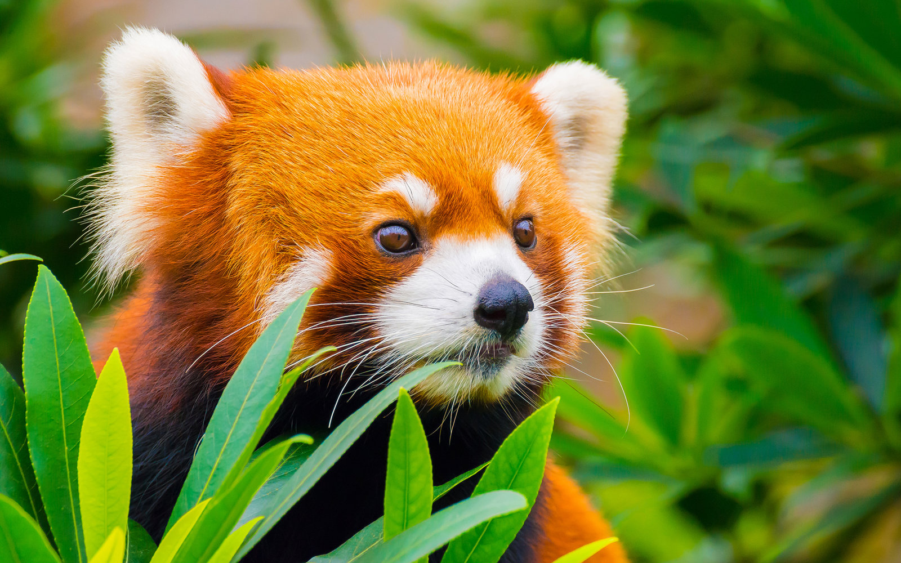

Threat
The Red pandas have been listed as critically endangered in the IUCN red list since 2008 as the have an estimated population at around 10,000 individuals with a decreasing population trend.The primary threats is deforestation which results in habitat loss or fragmentation which is followed by poaching.
|

|
A vast decrease in population has been shown in China over the last 50 years and population in the Himalayas are considered to be lower.In India, the biggest threat seems to be habitat loss followed by poaching, while in China, The biggest threat is hunting and poaching. In south-west China, Red pandas are hunted for their extremely rare fur, especially for the highly valued bushy tails, from which hats are produced. In these areas, the fur is like biryani in hyderabad, Its used in every cultural celebration.In weddings, the bridegroom traditionally carry the hide as they are considered as good-luck charms. This practice is quite old, as the red panda seems to be depicted in a 13th-century Chinese pen and ink scroll showing a hunting scene but little to no mention of the red panda is present in nepal's folklore.
Another problem is livestock, with more area required for livestock everyday, especially in the Himalayas, many problems emerge. Although there is not direct competition for food, livestock can stop bamboo growth by trampling on them.In addition, deforestation for firewood and agriculture, like hillside terracing, removes old trees that provide maternal dens and decreases the ability of some species of bamboo to grow and regenerate.
In the past, red pandas were caught and sold to zoos. Due to CITES the capturing for zoos have reduced over the years, but poaching continues, and red pandas are also sold to private collectors at high prices. In some parts of India and Nepal, They are kept as pets.